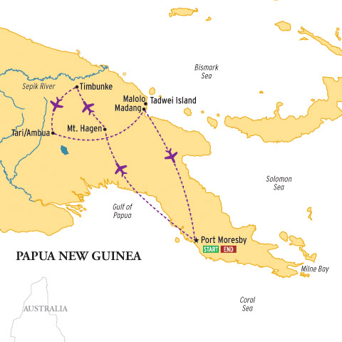

| In August 2008 we traveled to Papua New Guinea. On this trip we
attended the Mt. Hagen Singsing, traveled on the Sepik River to visit
villages, spent time in the Southern Highlands (the home of the Huli
Wigmen), and went to Madang on the coast. We flew in and out of Port
Morsby. These photos and videos are from this trip.  our trip was organized by Asia Transpacific Journeys |